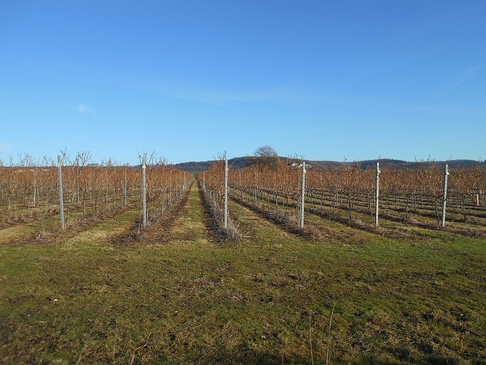

EFFERVESCENT
Accueil › Angleterre › Kent
Région viticole (PDO English Wine)Kent
Le Kent, à l’extrémité sud-est de l’Angleterre, est l’une des principales zones viticoles du pays. Sur les collines crayeuses des North Downs et les sols du Weald, on y élabore surtout des effervescents de méthode traditionnelle et des blancs tranquilles de bacchus et de chardonnay.

Histoire
Traditionnellement surnommé le « jardin de l’Angleterre » pour ses vergers et ses champs de houblon, le Kent a une longue vocation agricole. Il existait déjà des vignes dans la région au Moyen Âge, liées en partie à des institutions religieuses comme celles de Canterbury, mais la viticulture moderne a commencé dans la seconde moitié du XXe siècle avec de petites plantations de cépages précoces. Dans la région de Tenterden, dans le Weald, des vignes furent plantées à la fin des années 1970, et c’est là que s’est ensuite installé Chapel Down, devenu l’un des plus grands producteurs du pays.
Avec l’essor de l’effervescent anglais, le Kent a attiré d’importants investissements au cours des dernières décennies. De nouvelles vignes ont été plantées sur les pentes crayeuses des North Downs et dans d’autres parties du comté, et la maison de Champagne Taittinger a choisi le Kent pour son projet anglais. Parmi les autres producteurs connus de la zone figurent Gusbourne, près d’Appledore, et Simpsons, près de Canterbury. Le Kent n’a pas d’appellation d’origine propre et ses vins relèvent des appellations nationales anglaises.
Climat
Le Kent compte parmi les régions les plus chaudes et les plus sèches d’Angleterre, avec une influence maritime venue de l’estuaire de la Tamise, de la mer du Nord et de la Manche. La saison de végétation est longue et fraîche, avec des étés doux qui permettent une maturation lente et la préservation de l’acidité. Les gelées de printemps sont le principal risque dans les zones basses, et le choix de coteaux bien ventilés est important pour en limiter les effets.
Sols
Les North Downs, qui traversent le comté d’ouest en est jusqu’aux falaises de Douvres, sont constitués de craie, comme les South Downs du Sussex et la Champagne ; leurs pentes exposées au sud sont jugées particulièrement propices aux effervescents. Au sud s’étend le Weald, aux sols d’argile, de limon et de sable, plus fertiles et plus rétentifs, où se trouvent certaines des plus anciennes vignes de la région. Près de la côte sud-est, on trouve aussi des sols argileux et sableux d’origine sédimentaire.
Cépages et styles
Comme dans le reste du sud de l’Angleterre, l’essentiel du vignoble est consacré au chardonnay, au pinot noir et au pinot meunier destinés aux effervescents de méthode traditionnelle, élaborés en versions non millésimées, millésimées, blanc de blancs et rosé. Le Kent est aussi l’une des zones les plus associées au bacchus, qui donne des blancs tranquilles aromatiques aux notes de fleur de sureau, d’agrumes et d’herbe, souvent comparés au sauvignon blanc. On y élabore également du chardonnay et du pinot noir tranquilles, ainsi que de petites quantités d’autres cépages.
Vins · Kent
EFFERVESCENT